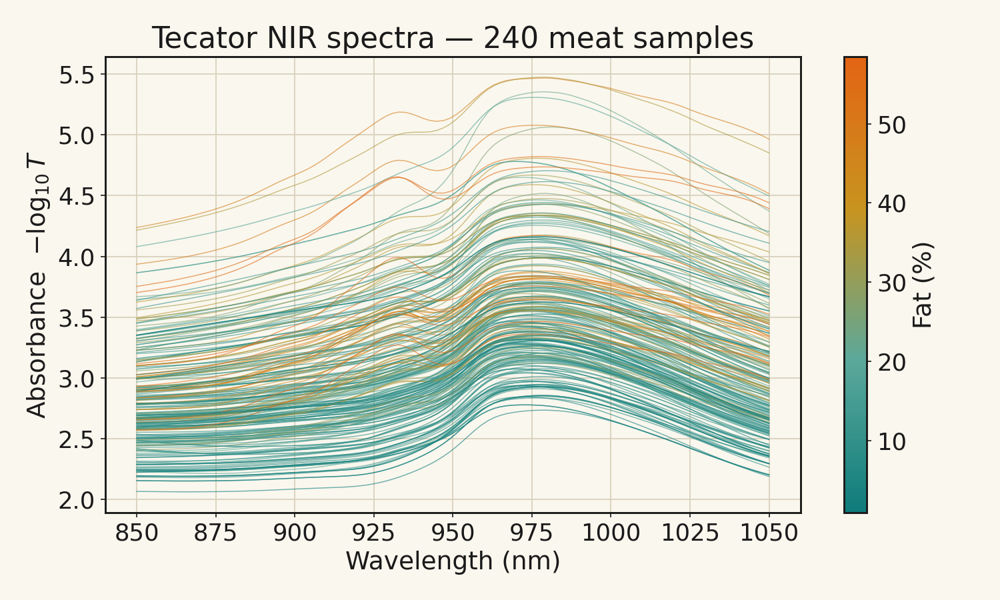
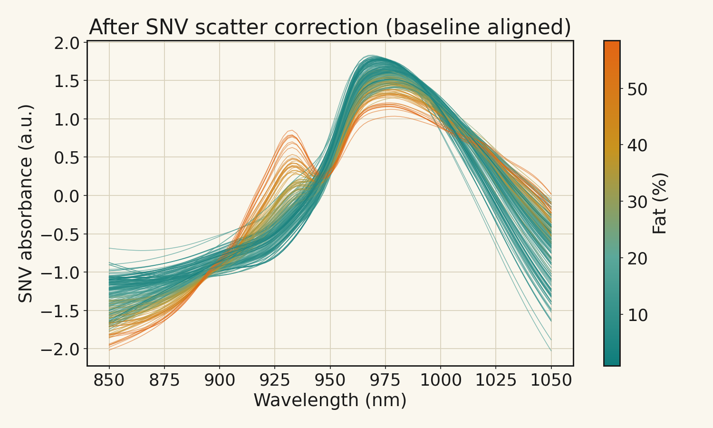
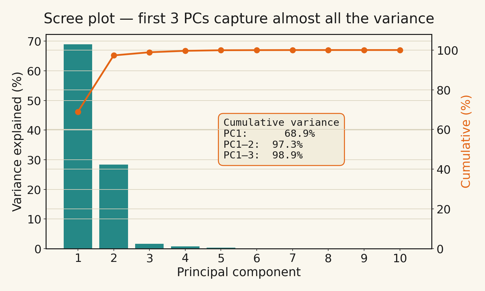
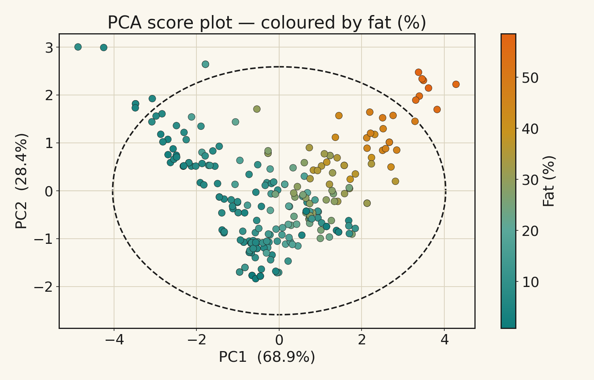
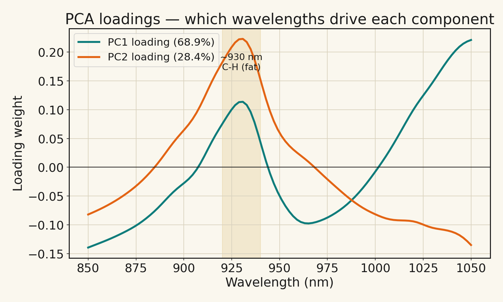
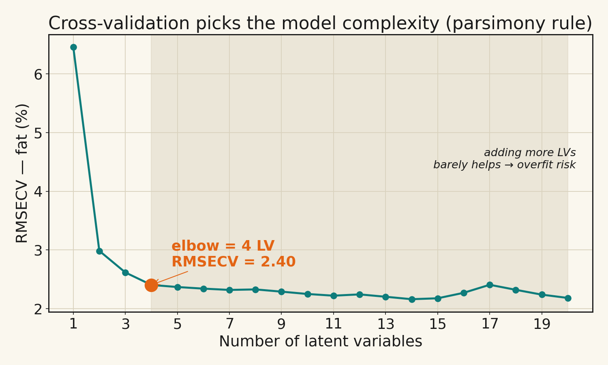
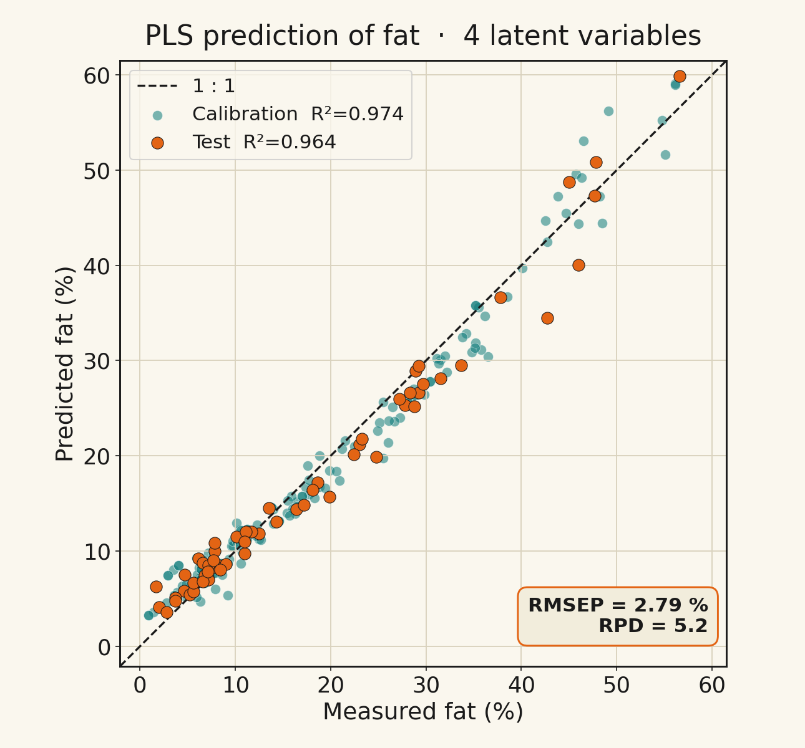
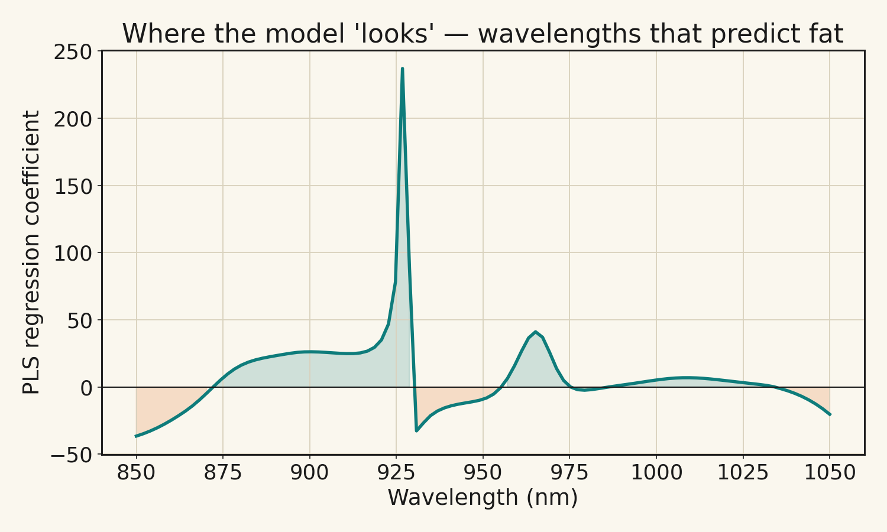

幾秒鐘、不破壞，就看穿成分
近紅外光（Near-Infrared, NIR，約 780–2500 nm）會被食品中 O–H、C–H、N–H 等化學鍵吸收。 量一條光譜，等於同時「問」了樣本裡的水分、脂肪、蛋白質——而且不需要試劑、不破壞樣本。
快
一次掃描幾秒鐘，可裝在生產線上即時量測。非破壞
光照進去、反射或穿透出來，樣本完好如初。但是…
一條光譜是上百個高度重疊的數字，必須靠化學計量學才能解讀。Tecator 肉品 NIR（公開資料）
Tecator Infratec 食品分析儀量測的 240 個肉品樣本，每個樣本有 100 個波長（850–1050 nm）的吸光值， 並以濕化學測得水分、脂肪、蛋白質的真值。屬公開資料（StatLib / OpenML id 505）。

| 成分 | 範圍 (%) | 平均 | 本課用途 |
|---|---|---|---|
| 水分 moisture | 32.8 – 76.6 | 62.9 | 備用目標 |
| 脂肪 fat | 0.9 – 58.5 | 18.5 | PLS 預測目標 |
| 蛋白質 protein | 8.8 – 23.2 | 17.8 | 備用目標 |
前處理：SNV 散射校正
不同樣本的顆粒、量測距離會讓基線整條飄移。標準常態變量轉換（SNV）把每條光譜各自校正，凸顯真正的化學差異。

PCA：把上百個波長壓成幾個方向
主成分分析（Principal Component Analysis）在資料最分散的方向上建立新座標軸： PC1 是變異最大的方向、PC2 與它垂直且次大……少數幾個主成分，就能描述幾乎全部的資訊。
要保留幾個主成分？

分數圖：樣本自己排好了

負荷量回連化學

PLS：從光譜「預測」脂肪含量
偏最小二乘回歸（Partial Least Squares）找出的方向，同時解釋光譜的變異、又與目標脂肪相關。 這就是它和 PCA 的關鍵差異：PCA 只看 X，PLS 一手抓 X、一手抓 y。
該用幾個潛在變量？用交叉驗證

成果：預測 vs 真實

R² = 0.96
解釋了測試集 96% 的變異。RMSEP ≈ 2.8%
平均預測誤差（脂肪百分點）。模型在「看」哪裡？

Python 程式（scikit-learn）
整套分析用 numpy / scikit-learn / scipy 完成，可重現。完整檔案見 python/ 目錄。
前處理 — SNV 散射校正（python/nir_utils.py）
def snv(X):
"""Standard Normal Variate：逐樣本（逐列）散射校正。"""
mu = X.mean(axis=1, keepdims=True)
sd = X.std(axis=1, keepdims=True)
return (X - mu) / sdPCA — 主成分分析（python/02_pca.py）
from sklearn.decomposition import PCA
Xp = snv(X) # 散射校正
pca = PCA(n_components=10).fit(Xp)
scores = pca.transform(Xp) # 樣本在新軸上的位置 (T)
evr = pca.explained_variance_ratio_ * 100
# PC1 = 68.9% | 前2個 = 97.3% | 前3個 = 98.9%PLS — 偏最小二乘回歸，預測脂肪（python/03_pls.py）
from sklearn.cross_decomposition import PLSRegression
from sklearn.model_selection import train_test_split, cross_val_predict, KFold
Xp = savgol_d(snv(X), window=15, poly=2, deriv=1) # SNV + 一階導數
Xtr, Xte, ytr, yte = train_test_split(Xp, y_fat,
test_size=0.25, random_state=42)
# 用 10-fold 交叉驗證 + 轉折點規則挑潛在變量 -> 4 個
model = PLSRegression(n_components=4).fit(Xtr, ytr)
yte_p = model.predict(Xte).ravel()
# 測試集 R² = 0.964 | RMSEP = 2.79% | RPD = 5.2▶ 如何在本機重跑
pip install numpy pandas scipy scikit-learn matplotlib
cd python
python 01_data_prep.py # 抓資料 + 原始/SNV 光譜圖
python 02_pca.py # 陡坡 / 分數 / 負荷量
python 03_pls.py # 選 LV / 預測 vs 真實 / 係數
# 所有圖輸出到 python/figures/用 Orange Data Mining 親手拉一遍
課堂可用 Orange 的拖拉式 widget，不寫一行程式就重現上面的 PCA 與 PLS。
開啟 orange/nir_tecator_workflow.ows，把 File 指向 data/tecator.csv、設 fat 為 target 即可。
┌─ Data Table （檢視原始數字）
│
File ────┼─ PCA ──Transformed Data──▶ Scatter Plot ← PCA 分支（探索；Color = fat）
(tecator) │
├─ PLS ──Learner──▶ Test & Score ← PLS 分支（R² / RMSE）
│ └─ Model ──▶ Predictions ──▶ Scatter Plot（預測 vs 真實）
└────────────────（Data 同時接 Test&Score / Predictions）| 對應概念 | Python 圖 | Orange widget |
|---|---|---|
| 原始光譜 | fig01 | File → Data Table |
| 主成分數量 | fig03 | PCA 視窗內變異曲線 |
| 分數圖（依脂肪上色） | fig04 | PCA → Scatter Plot（Color=fat） |
| 選 LV / 過度擬合 | fig06 | 調 PLS Components + Test&Score |
| 預測 vs 真實 | fig07 | Predictions → Scatter Plot |
| 回歸係數 → 化學 | fig08 | PLS「Coefficients and Loadings」 |
PCA 與 PLS，一張表看懂
| 面向 | PCA | PLS |
|---|---|---|
| 學習方式 | 非監督（只看 X） | 監督（用 X 與 y） |
| 目的 | 探索結構、分群、找異常 | 定量預測（如脂肪 %） |
| 找方向的準則 | 最大化 X 的變異 | 最大化 X 與 y 的共變異 |
| 本課結果 | 前 3 個 PC 抓 98.9% 變異 | 測試集 R²=0.96、RPD 5.2 |
| 關鍵圖 | 陡坡圖、分數圖、負荷量 | RMSECV、預測 vs 真實、係數 |
| 何時用 | 先用它「看」資料 | 確定要預測時用它建模 |